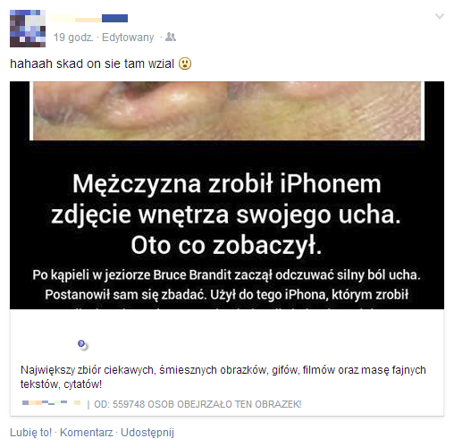

SpamCheck FB
Przestań wysyłać nieświadomie spam. Usuń go z SpamCheck FB - programikiem od Skorupy.

Instalowanie skryptozakładki
- Włącz w swojej przeglądarce pasek zakładek. (gdzieś w Widok)
- Przeciągnij link obok na pasek zakładek. SpamCheck FB
- Koniec.
Używanie
- 2 razy kliknij w zakładkę.
- Usuń wyznaczone aplikacje.
- Koniec.